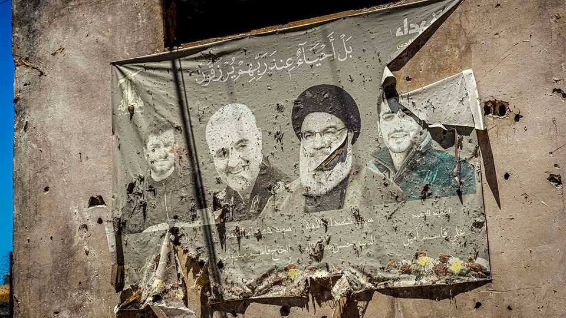
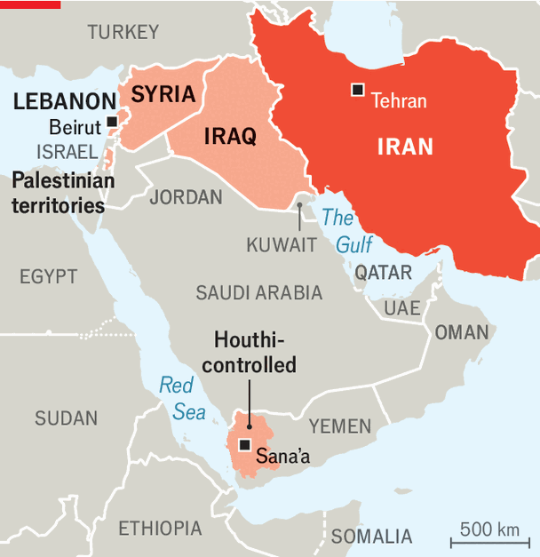
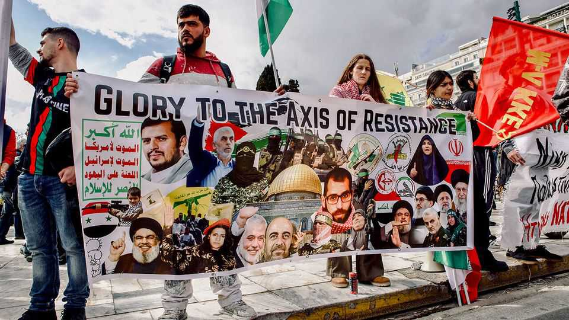

Iran’s proxies are going their own way
After three years of war, the axis of resistance is no longer an axis

Sep 3rd 2026
For years Iranian officials spoke of an “axis of resistance”, allies from Beirut to Sana’a who would stand together against common foes (see map). Yet when Iran was attacked twice in the past 15 months, each made a different decision about whether to join the fray. The axis may not be dead—but the brand has outlived the business.

The strategy of backing Arab militias dates to the 1980s, when Iran sent its Islamic Revolutionary Guard Corps (IRGC) to train Hizbullah fighters in Lebanon. It saw such groups as a substitute for its weak conventional army: they would serve as forward defence, projecting power while keeping conflict away from Iran.
The defence clearly failed. The Hamas-led massacre on October 7th 2023 started a cascade of wars that ended with Iran itself being attacked. Hizbullah and Hamas are badly weakened. Bashar al-Assad’s regime in Syria has gone. The Iraqi government has ordered militias to disarm by October.
Some regime foes hope that Iran will have to curtail its support, perhaps to facilitate a deal with America, and trigger the collapse of the axis. That is unlikely. The militias are wounded but alive, and the strategic rationale for supporting them is stronger than ever. Yet the axis may also struggle to rebuild itself as a consortium: the parent company in Tehran is bankrupt, and many of its subsidiaries are poorly run.
A likelier outcome is that its constituent parts survive but diverge. Some will become Iranian wards, held tightly but used sparingly. A few will graduate from the axis. Others will emerge as strays: clients that might have somewhere else to go. Counter-intuitively, Iran will exercise the tightest control over groups that have suffered the greatest blows to their capabilities.
Take Hizbullah, once Iran’s most feared proxy. Until 2023 it had an arsenal of more than 100,000 rockets and missiles aimed at Israel and a well-trained commando force that had honed its skills fighting to save Mr Assad’s regime. Hassan Nasrallah, its charismatic leader assassinated by Israel in 2024, saw himself as a peer rather than a proxy. He was a true believer steeped in Iran’s revolutionary ideology, but tried to preserve some autonomy.
No longer. Naim Qassem, Nasrallah’s successor, is an unloved middle-manager. Israeli strikes have killed many of the group’s experienced commanders. The Lebanese government insists that Hizbullah must hand over its diminished arsenal. With so many commanders dead, the IRGC sent its own men to Lebanon to exercise direct control over the group, leaving it little choice but to start another war with Israel in March. At the same time, its domestic popularity has collapsed. Iran will preserve Hizbullah less for what it can do than for what its loss would signal.
At the other extreme are the Houthis, the most independent-minded of Iran’s allies. They started as a local insurgency in northern Yemen in the 1990s. It would be decades before Iran offered significant financial and military aid. When it came, it vastly improved their capabilities. Once derided as barefoot gunmen, Houthi fighters now wield anti-ship missiles to harass vessels in the Red Sea and air defences to shoot down American Reaper drones.

Yet the Houthis continue to guard their autonomy. Their involvement in the post-October 7th wars has waxed and waned, based more on their own interests than Tehran’s. They are increasingly able to produce their own weapons and are forging their own alliances, for example with al-Shabab, the al-Qaeda affiliate that controls much of Somalia. Houthi delegations have visited Russia and held talks with China. Iran and the Houthis will continue to find common interest: both loathe America, Israel and Saudi Arabia. But that is not the same as taking orders.
In between are the strays. Many Shia militias in Iraq are a by-product of the American-led invasion in 2003, after which Iran poured weapons and money into the country to bleed its American foes. Two decades later their priorities have changed. Iran remains an ally, but their main patron is the Iraqi state, which has more than 200,000 militiamen on its payroll.
Some militias did launch attacks on American bases earlier this year, but they worry that open conflict with the Iraqi government or its allies would jeopardise their position. The IRGC is said to have sent advisers to Iraq to establish small cells tasked with attacking Gulf states, a sign that the bigger militias were reluctant to do so.
Hamas was always an awkward fit in the axis, a Sunni group in a largely Shia bloc. It fell out with Iran over the latter’s support for the Assad regime in Syria. Khalil al-Hayya, its newly appointed leader, is considered a loyal Iranian ally, but other officials would prefer a pivot towards Sunni powers, namely Turkey and the Gulf.
In March Hamas urged Iran to halt its attacks on Gulf states. Iran will not abandon it—support for the Palestinians is central to the regime’s identity—but its support may be more rhetorical than material.
Even if Iran wanted to rebuild all its allies, its resources are limited. The war has caused hundreds of billions of dollars’ worth of damage. America is blockading its ports and tightening sanctions on its economy. The fall of Mr Assad’s regime also severed the land route to Lebanon. Iran will need to prioritise.
In some ways, the fate of the axis may mirror that of Soviet client states in the 1980s, when Moscow could no longer afford to offer them generous support. This is an imperfect analogy, of course. Moscow’s allies had a rival superpower to turn to, while Tehran’s face a messier board: some have a range of possible partners; others, none at all. Still, the Middle East’s most ambitious conglomerate may be heading for a restructuring. ■